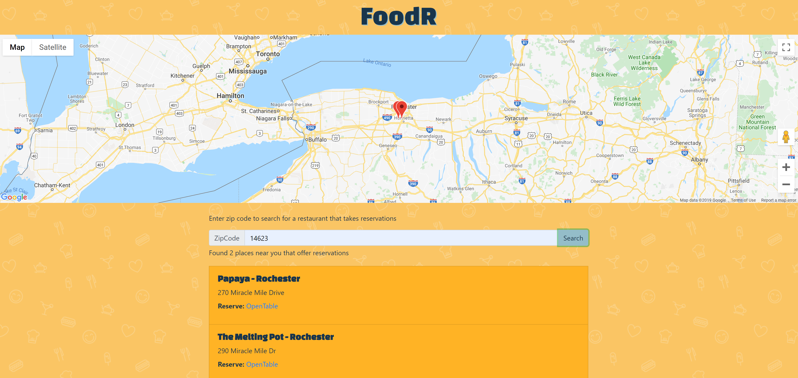

FoodR is a web service app created in the spring of 2018 for the course Rich Media Web App Development. It uses the Google Maps API and the OpenTable API to display restaurants near a specific zip code that take reservations. It uses VUE.js to display the data.
 Check it out